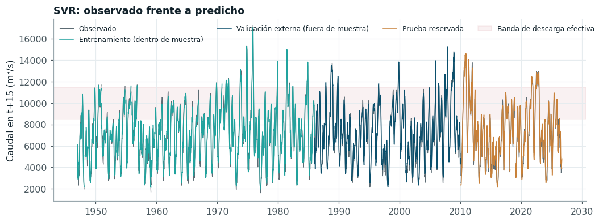
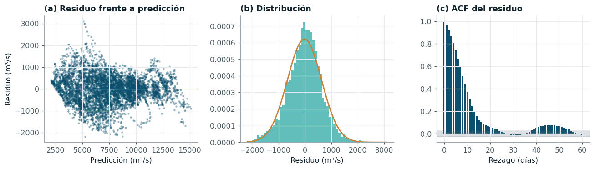

Regresión del caudal a quince días#
La tarea auxiliar de regresión predice el caudal de Calamar en t + 15 (m³/s) con los mismos predictores, las mismas particiones y el mismo motor de experimentos. Además de cumplir la parte de regresión del Entregable 2, ofrece una lectura complementaria del problema: una regresión precisa del caudal no garantiza una clasificación precisa de la banda, porque los errores que importan para la clase son los que ocurren cerca de los límites.
| Modelo | Optimizador | RMSE (m³/s) | MAE (m³/s) | R² | MAPE (%) | Tiempo total (s) | |
|---|---|---|---|---|---|---|---|
| 0 | SVR | Bayesiana (TPE) | 575.7 ± 73.6 | 455.2 ± 63.2 | 0.939 ± 0.025 | 7.55 | 17135.0 |
| 1 | SVR | Random | 579.6 ± 72.1 | 458.2 ± 63.0 | 0.939 ± 0.025 | 7.59 | 9880.0 |
| 2 | XGBoost | Random | 584.0 ± 70.5 | 460.8 ± 60.6 | 0.938 ± 0.023 | 7.66 | 2071.0 |
| 3 | XGBoost | Genética (DEAP) | 586.7 ± 66.5 | 463.9 ± 58.0 | 0.938 ± 0.022 | 7.75 | 2562.0 |
| 4 | SVR | Genética (DEAP) | 587.6 ± 73.3 | 466.4 ± 64.2 | 0.937 ± 0.024 | 7.85 | 14785.0 |
| 5 | SVR | Grid | 588.7 ± 65.9 | 465.3 ± 59.5 | 0.937 ± 0.025 | 7.67 | 12465.0 |
| 6 | XGBoost | Bayesiana (TPE) | 600.3 ± 74.9 | 477.7 ± 65.8 | 0.934 ± 0.027 | 7.94 | 1135.0 |
| 7 | Random Forest | Random | 614.0 ± 79.2 | 485.9 ± 64.1 | 0.931 ± 0.027 | 8.15 | 2022.0 |
| 8 | Random Forest | Genética (DEAP) | 616.6 ± 83.3 | 486.3 ± 64.4 | 0.931 ± 0.027 | 8.15 | 2480.0 |
| 9 | XGBoost | Grid | 621.7 ± 74.2 | 493.9 ± 60.5 | 0.929 ± 0.029 | 8.16 | 2771.0 |
| 10 | Random Forest | Bayesiana (TPE) | 622.9 ± 82.4 | 493.6 ± 65.8 | 0.929 ± 0.027 | 8.25 | 1639.0 |
| 11 | Random Forest | Grid | 624.1 ± 86.5 | 492.9 ± 68.8 | 0.929 ± 0.027 | 8.24 | 2331.0 |
| 12 | Ridge | Grid | 624.3 ± 77.7 | 497.7 ± 72.9 | 0.929 ± 0.028 | 8.09 | 54.0 |
| 13 | Ridge | Bayesiana (TPE) | 624.3 ± 77.7 | 497.7 ± 72.8 | 0.929 ± 0.028 | 8.09 | 56.0 |
| 14 | Ridge | Genética (DEAP) | 624.4 ± 77.7 | 498.0 ± 72.6 | 0.929 ± 0.028 | 8.10 | 55.0 |
| 15 | Ridge | Random | 624.6 ± 77.8 | 497.9 ± 72.7 | 0.929 ± 0.028 | 8.09 | 55.0 |
| 16 | Lasso | Random | 627.0 ± 76.4 | 498.8 ± 71.7 | 0.929 ± 0.028 | 8.08 | 536.0 |
| 17 | Lasso | Grid | 628.9 ± 77.8 | 500.7 ± 72.9 | 0.928 ± 0.028 | 8.13 | 800.0 |
| 18 | Lasso | Genética (DEAP) | 629.2 ± 77.7 | 500.8 ± 72.7 | 0.928 ± 0.028 | 8.13 | 748.0 |
| 19 | Lasso | Bayesiana (TPE) | 629.7 ± 77.1 | 500.5 ± 72.4 | 0.928 ± 0.028 | 8.12 | 643.0 |
| 20 | KNN | Grid | 677.9 ± 100.4 | 531.9 ± 83.3 | 0.918 ± 0.027 | 8.67 | 739.0 |
| 21 | KNN | Bayesiana (TPE) | 678.4 ± 98.9 | 532.7 ± 82.6 | 0.918 ± 0.027 | 8.68 | 886.0 |
| 22 | KNN | Random | 679.6 ± 99.9 | 533.2 ± 82.6 | 0.917 ± 0.027 | 8.69 | 725.0 |
| 23 | KNN | Genética (DEAP) | 679.6 ± 99.9 | 533.2 ± 82.6 | 0.917 ± 0.027 | 8.69 | 895.0 |
| 24 | Árbol de decisión | Random | 732.1 ± 95.5 | 575.9 ± 85.2 | 0.902 ± 0.038 | 9.43 | 220.0 |
| 25 | Árbol de decisión | Bayesiana (TPE) | 744.3 ± 95.9 | 584.6 ± 79.7 | 0.899 ± 0.038 | 9.51 | 214.0 |
| 26 | Árbol de decisión | Genética (DEAP) | 753.7 ± 89.2 | 590.3 ± 71.5 | 0.897 ± 0.038 | 9.62 | 206.0 |
| 27 | Árbol de decisión | Grid | 764.0 ± 138.3 | 593.2 ± 96.6 | 0.896 ± 0.036 | 9.68 | 196.0 |
Métricas en la prueba reservada#
| Modelo | Optimizador | RMSE | MAE | R² | |
|---|---|---|---|---|---|
| 0 | Persistencia (Q(t+15) = Q(t)) | — | 984.829 | 775.660 | 0.873 |
| 1 | SVR | Bayesiana (TPE) | 642.767 | 495.390 | 0.946 |
| 2 | XGBoost | Random | 641.024 | 496.047 | 0.946 |
| 3 | Random Forest | Random | 667.209 | 517.344 | 0.942 |
| 4 | Ridge | Grid | 682.335 | 532.091 | 0.939 |
| 5 | Lasso | Random | 681.291 | 531.532 | 0.939 |
| 6 | KNN | Grid | 756.342 | 587.660 | 0.925 |
| 7 | Árbol de decisión | Random | 758.904 | 597.540 | 0.925 |
| Modelo | RMSE | MAE | p (White) | p (BDS, m=2) | p (BDS, m=3) | p (Ljung-Box, 15) | p (Jarque-Bera) | ACF(1) del residuo | |
|---|---|---|---|---|---|---|---|---|---|
| 0 | SVR | 642.7675 | 495.3901 | 0.0000 | 0.0006 | 0.0004 | 0.0 | 0.0000 | 0.9662 |
| 1 | XGBoost | 641.0237 | 496.0472 | 0.0000 | 0.0000 | 0.0001 | 0.0 | 0.0000 | 0.9563 |
| 2 | Random Forest | 667.2088 | 517.3440 | 0.0000 | 0.0001 | 0.0001 | 0.0 | 0.0000 | 0.9724 |
| 3 | Ridge | 682.3353 | 532.0907 | 0.0000 | 0.0002 | 0.0004 | 0.0 | 0.0000 | 0.9812 |
| 4 | Lasso | 681.2912 | 531.5321 | 0.0000 | 0.0000 | 0.0003 | 0.0 | 0.0000 | 0.9836 |
| 5 | KNN | 756.3423 | 587.6596 | 0.0000 | 0.0000 | 0.0000 | 0.0 | 0.0001 | 0.9792 |
| 6 | Árbol de decisión | 758.9041 | 597.5402 | 0.0003 | 0.0000 | 0.0000 | 0.0 | 0.0046 | 0.8584 |
La mejor combinación en el bucle externo es SVR con optimización bayesiana, seguida de cerca por XGBoost. En la prueba reservada ambas alcanzan un RMSE cercano a 640 m³/s y un R² de 0,946, frente a un RMSE de 985 m³/s de la persistencia: los modelos reducen el error de predicción a quince días en alrededor de un tercio. Los modelos lineales (Ridge y Lasso) quedan cerca, a unos 40 m³/s, lo que indica que buena parte de la señal del caudal futuro es lineal en el estado reciente; la no linealidad pesa mucho más en la clasificación de la banda que en la regresión del caudal, y esa asimetría es la que motiva el modelo original.
Las pruebas de supuestos rechazan la homocedasticidad (White), la independencia (BDS y Ljung-Box) y la normalidad (Jarque-Bera) en todos los modelos, y la autocorrelación de orden uno del residuo del mejor modelo es 0,97. Ese resultado no es, por sí mismo, señal de mala especificación: con un horizonte de quince días, los errores de días consecutivos comparten catorce de sus quince días de evolución no observada, de modo que el residuo tiene por construcción una estructura de media móvil de orden catorce. La consecuencia práctica es que ninguna comparación entre modelos de regresión puede tratar los errores diarios como independientes, y por eso la sección de comparación estadística usa estadísticos con varianza de largo plazo y bootstrap estacionario.
Entrenamiento, validación y prueba#

Figura 16 Caudal observado y predicho a quince días por el mejor modelo de regresión. Entrenamiento (ajuste dentro de muestra, 1947-1985), validación (predicciones fuera de muestra del bucle externo, 1986-2009) y prueba reservada (2010-2026). Para legibilidad se muestran medias semanales.#
| segmento | RMSE modelo | RMSE persistencia | reducción frente a la persistencia | |
|---|---|---|---|---|
| 0 | Entrenamiento 1947-2009 (dentro de muestra) | 612.722 | 1044.298 | 0.413 |
| 1 | Validación externa 1986-2009 (fuera de muestra) | 580.289 | 1021.987 | 0.432 |
| 2 | Prueba reservada 2010-2026 | 642.767 | 984.829 | 0.347 |
La Figura 16 y la tabla anterior permiten evaluar el sobreajuste y la estabilidad temporal del mejor regresor. El error dentro de muestra en el entrenamiento (613 m³/s) es del mismo orden que el error fuera de muestra en la validación externa (580 m³/s) y en la prueba reservada (643 m³/s), lo que descarta un sobreajuste apreciable: la regularización del modelo, elegida en la validación anidada, limita su capacidad a la estructura que se repite entre décadas. La reducción del error frente a la persistencia se mantiene en todos los bloques externos, entre el 27 % y el 52 %, y no se degrada en la prueba, de modo que la relación aprendida no depende de un periodo particular. En la figura, las mayores desviaciones coinciden con los picos de las crecidas y con los ascensos abruptos desde el estiaje, que el estado actual del río no anticipa.
Para la tarea de clasificación interesa además si el caudal previsto cae del lado correcto de los límites de la banda. En la prueba, el regresor acierta el lado en el 94,5 % de los días; el acierto es del 100 % cuando el caudal observado queda a más del 20 % de \(Q_{ef}\) de un límite y cae al 74,6 % cuando queda a menos del 5 %. Un error de unos 640 m³/s, pequeño en términos relativos, basta para cambiar la clase de los días próximos a los límites, que es donde se concentran los errores de todos los clasificadores.
Análisis de residuos#

Figura 17 Residuos del mejor modelo de regresión en la prueba. (a) Residuo frente a la predicción; (b) histograma con la densidad normal de igual media y desviación; (c) función de autocorrelación.#
La autocorrelación del residuo decae hasta anularse hacia los rezagos 20 a 25 (Figura 17c), como corresponde a la estructura de media móvil descrita. El diagrama de residuo frente a predicción no muestra un sesgo sistemático en la mayor parte del rango, salvo por encima de unos 12.500 m³/s, donde los residuos son mayoritariamente negativos: el modelo sobreestima las crecidas mayores, que en el entrenamiento son pocas. Muestra también heterocedasticidad: la correlación de Spearman entre el error absoluto y la predicción es -0,22, de modo que los errores grandes se concentran en caudales previstos bajos e intermedios, que corresponden a los ascensos rápidos desde el estiaje que el estado actual anticipa mal. La curtosis en exceso del residuo es 0,74, con colas algo más pesadas que la normal. Ambos rasgos son relevantes para el modelo original: una dispersión que cambia con el estado del río es justamente lo que BLGB modela con su segundo ensamble, el del logaritmo de σ.